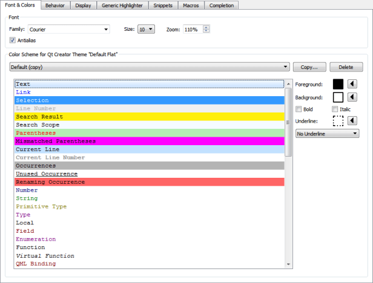

Specifying Text Editor Settings
Set the font preferences and apply color schemes for syntax highlighting in Tools > Options > Text Editor > Font & Colors.

Configuring Fonts
You can select the font family and size. You can specify a zoom setting in percentage for viewing the text. You can also zoom in or out by pressing Ctrl++ or Ctrl+-, or by pressing Ctrl and rolling the mouse button up or down. To disable the mouse wheel function, select Tools > Options > Text Editor > Behavior and deselect the Enable scroll wheel zooming check box.
Antialiasing is used by default to make text look smoother and more readable on the screen. Deselect the Antialias check box to turn off antialiasing.
Defining Color Schemes
You can select one of the predefined color schemes for syntax highlighting or create customized color schemes. The color schemes apply to highlighting both C++ and QML files and generic files.
To create a color scheme:
- Select Tools > Options > Text Editor > Fonts & Color > Copy.
- Enter a name for the color scheme and click OK.
- In the Foreground field, specify the color of the selected code element.
- In the Background field, select the background color for the code element.
The backgound of the Text element determines the background of the code editor.
When you copy code from Qt Creator, it is copied in both plain text and HTML format. The latter makes sure that syntax highlighting is preserved when pasting to a rich-text editor.
File Encoding
To define the default file encoding, select Tools > Options > Text Editor > Behavior, and then select a suitable option in Default encoding.
Qt 5 requires UTF-8 encoded source files, and therefore the default encoding was changed from System to UTF-8 in Qt Creator version 2.6. However, the Default encoding field still displays the value System if the default system encoding is set to UTF-8.
Detecting the correct encoding is tricky, so Qt Creator will not try to do so. Instead, it displays the following error message when you try to edit a file that is not UTF-8 encoded: Error: Could not decode "filename" with "UTF-8"-encoding. Editing not possible.
To resolve the issue, use a file conversion tool such as Recode to convert the file encoding to UTF-8 when developing Qt 5 applications. Otherwise, conversion of string constants to QStrings might not work as expected.
If you develop only Qt 4 applications or other than Qt applications, you can set other encoding options as the default encoding. Select the System option to use the file encoding used by your system.